Advice and guides
Building costs, permits, structure, electrical, plumbing, air conditioning: practical guides from our engineers to prepare your project in Morocco.
No article matches. Try another word, or ask us your question.
Where to start?
Buying a property
Whole topic →
Buying a riad to renovate in Marrakech: pitfalls and budget
A riad to renovate in the medina is a dream, but the purchase price is only part of the bill. Here is what to check before signing and how to estimate the work.
Read the article →
Handover of a new off-plan (VEFA) flat: how to record snags
On the day you get the keys, anything you do not note in the handover report may be considered accepted. Here is how to prepare the inspection and write up your snags.
Read the article →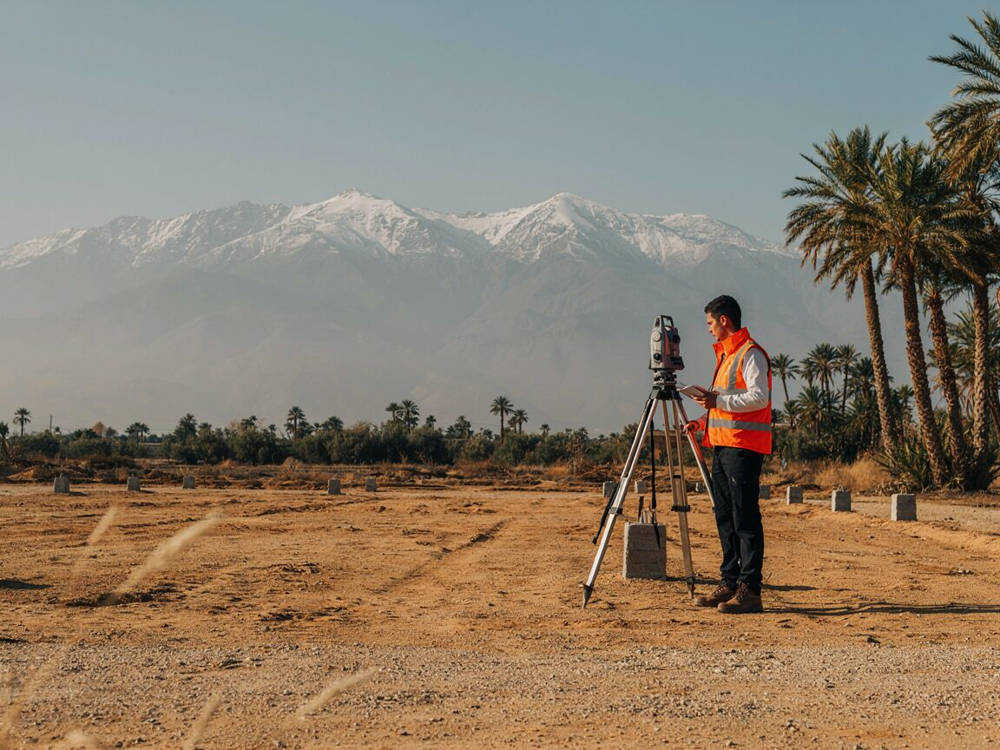
Buying building land in Morocco: the checks to carry out
Land advertised as buildable is not always so, or not for the project you have in mind. Here are the legal, planning and technical checks to carry out before signing.
Read the article →
Renovating an old house: where to start and in what order
Redoing the kitchen before the roof means risking having to start all over again. Here is the logical order of a renovation, from assessment to finishes.
Read the article →
House built without a permit or non-compliant: what are the risks?
An added storey, an undeclared extension, a house without an occupancy permit: these situations are common. They expose the buyer to legal, financial and sometimes technical risks.
Read the article →Land title and a house's compliance: what you need to check
A land title in order says nothing about what has been built on it. To buy with peace of mind, you must check ownership and the compliance of the construction separately.
Read the article →
Complete electrical renovation of a house: steps and cost
Rewiring an entire house is a major job but decisive for safety. Here are the steps, what drives the price and how to compare quotes.
Read the article →Pre-purchase inspection
Whole topic →
House inspection before buying: the trade-by-trade checklist
A 30-minute viewing is not enough to judge a house. Here, trade by trade, is what a buyer should check, what should raise a red flag and what repairs typically cost.
Read the article →
Checking a house's structure before buying: 7 key points
The structure is the only trade that can make a house unsellable or dangerous. Here is what to look at and when to call in an engineer.
Read the article →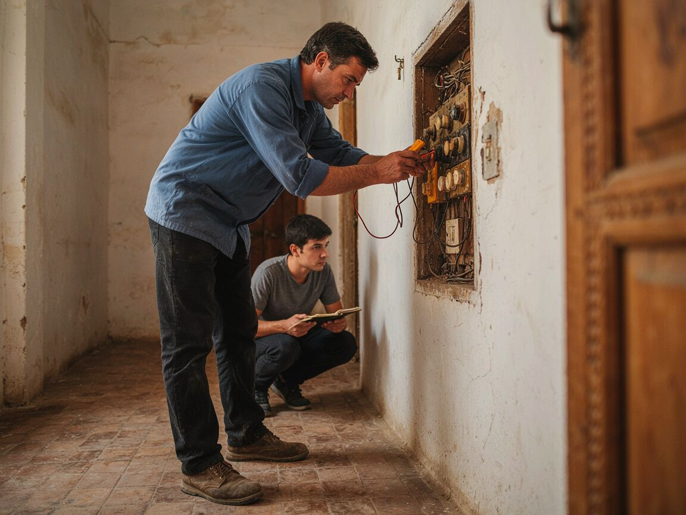
Checking the electrics of an old house: 8 simple checks
An outdated electrical installation is a major cause of house fires. Eight checks tell you whether it needs making safe or completely rewiring.
Read the article →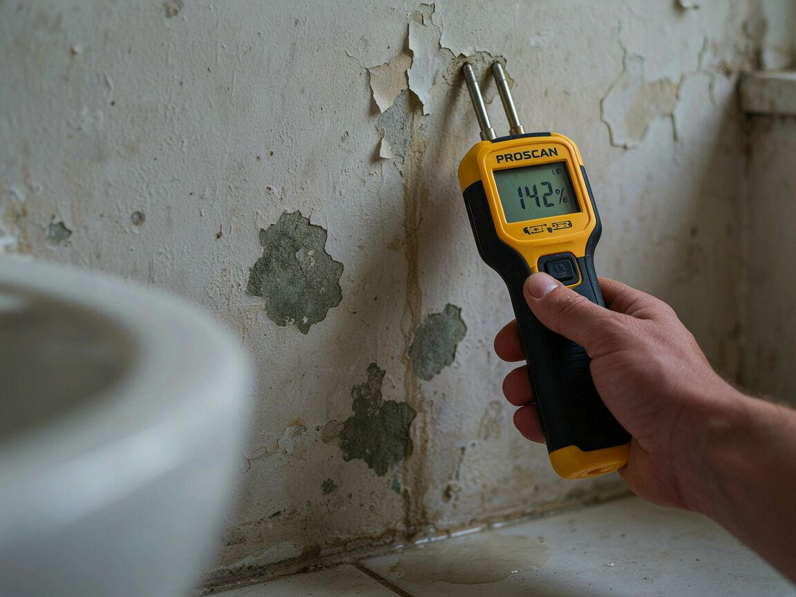
Checking plumbing and damp before buying: a practical guide
Water is the leading cause of defects in a house. A few simple tests during the viewing will stop you buying a hidden leak or a wall that never dries.
Read the article →
Building inspection cost in Morocco: fees and report content
Property valuation, technical assessment, court-appointed expert report: these services differ in both content and price. Here is how to tell them apart.
Read the article →Structure and reinforced concrete
Whole topic →
Soil study in Morocco: is it mandatory and how much does it cost?
What a geotechnical study reveals, when to commission it, how much it costs for a villa, and why it is one of the most cost-effective expenses on a building project.
Read the article →
Seismic code RPS 2011 in Morocco: what it means for your house
Seismic zoning, design rules, ring beams and reinforcement: what the seismic code actually requires of a villa or a riad in Morocco.
Read the article →
Concrete mix ratios: foundations, slabs, columns and blinding
How much cement per m³ depending on the element, what goes into a cubic metre of concrete, and the site mistakes that rob concrete of its strength.
Read the article →
Cost of a concrete swimming pool in Morocco in 2026
Price per m² of pool, worked examples, what quotes do not always include and why a reinforced concrete pool is designed like a structure.
Read the article →
Cracks in a house: causes, severity and when to worry
How to read a crack (width, pattern, progression), tell surface damage from structural damage, and the right steps before filling it.
Read the article →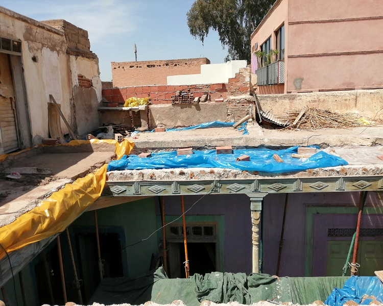
Adding a floor to your house in Morocco: feasibility and steps
Before adding a floor: what planning rules allow, what the existing structure can carry, the permit, and the possible strengthening works.
Read the article →
Flat roof waterproofing in Morocco: solutions and price per m²
Bitumen, liquid or PVC membrane: compare waterproofing solutions, their prices per m², and the details that prevent leaks.
Read the article →
Which foundation type to choose: footings, raft or piles?
You do not pick a foundation type from a catalogue: it follows from the bearing capacity of the soil, the depth of the good soil and the loads of your building.
Read the article →
Pad or strip footing dimensions: how to calculate them
The size of a footing follows from a calculation that is simple in principle: the load it receives divided by what the soil can bear. The rest is a matter of reinforcement and detailing.
Read the article →
Tie beams: what are they for and how are they sized?
Invisible once the ground slab is poured, tie beams are nevertheless a key element of a house's seismic resistance: they stop the foundations from moving independently of one another.
Read the article →
Horizontal and vertical ring beams: role and rules in Morocco
Ring beams and ties encircle masonry walls and connect them to the floors. In a seismic region like Marrakech, they make the difference between a wall that cracks and a wall that collapses.
Read the article →
Minimum size of a reinforced concrete column under the RPS
The 20 × 20 cm column still seen on some sites does not comply with the seismic code. Here is what the RPS requires and what remains to be calculated.
Read the article →
Hollow-block floor or solid slab: which one for your house?
The hollow-block floor is the most widespread solution for villas in Morocco, but the solid slab remains essential in certain cases. Here are the criteria to decide.
Read the article →
Reinforced concrete beam: what downstand for what span?
The downstand of a beam is often a topic of discussion between architect, client and engineer. Here are the orders of magnitude and the real room for manoeuvre.
Read the article →
Concrete cover to reinforcement: what values should you respect?
Cover is the thickness of concrete between the steel and the surface. A few millimetres less are enough to make the reinforcement rust and the concrete spall within a few years.
Read the article →
Checking reinforcement before pouring: the site checklist
Once the concrete is poured, it is too late: the reinforcement becomes invisible. The inspection before pouring is when the real strength of your structure is decided.
Read the article →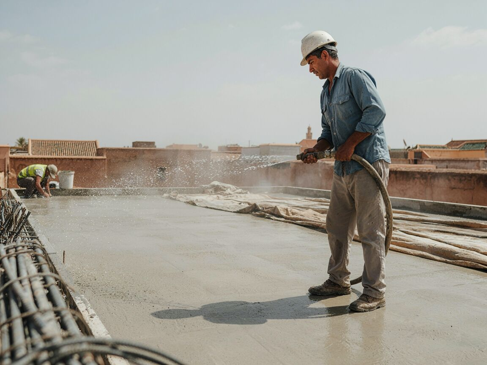
Curing concrete in hot weather: best practice in Marrakech
When it is over 40 °C in Marrakech, poorly protected concrete can lose a significant part of its strength and become covered in cracks within a few hours.
Read the article →
Formwork striking times for slabs, beams and columns
Striking formwork too early is one of the classic causes of excessive deflection, cracking and even collapse. Here are the times to respect depending on the element and conditions.
Read the article →
Opening or removing a load-bearing wall: steps, risks and design
Enlarging a living room or creating a wide opening by removing a load-bearing wall is possible, provided the loads are transferred correctly. What you need to know before demolishing.
Read the article →
Building expansion joints: when are they needed and how often?
A concrete building expands in the heat and contracts in the cold. Beyond a certain length, it must be split into independent blocks to avoid cracking.
Read the article →
Retaining wall: design, drainage and mistakes to avoid
A retaining wall holds back tonnes of soil and often water. Poorly designed or poorly drained, it tips over or cracks: it is a structure that must be designed by calculation.
Read the article →
Rising damp in walls: causes and how to treat it for good
Damp at the base of walls, tide marks, saltpetre: rising damp is common in old houses and riads. How to recognise it and treat it for the long term.
Read the article →
HA FeE500 rebar: diameters, cross-sections and weight per metre
To read a reinforcement drawing, estimate a steel order or check an invoice, you need to know the cross-section and weight per metre of each bar diameter.
Read the article →
Concrete classes B25, C25/30, C30/37: what do they mean?
On drawings and in specifications, concrete is designated by a strength class. Knowing how to read it lets you order the right concrete and check what is delivered.
Read the article →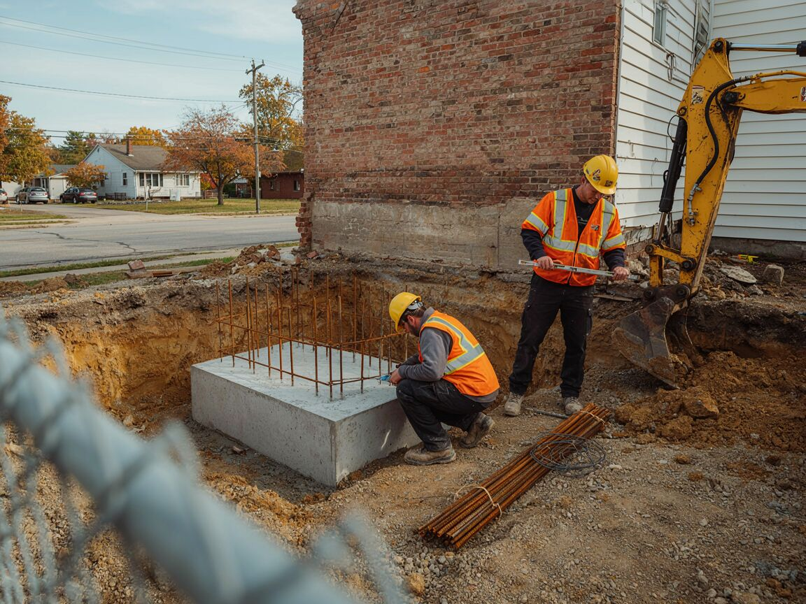
Underpinning foundations: when is it needed and how is it done?
Strengthening or deepening the foundations of an existing building without demolishing it is possible. It is a delicate operation that must be carefully designed and supervised.
Read the article →
Basements: tanking, waterproofing and water ingress
A basement that lets in water is one of the most expensive defects to put right. Protection is decided at the design stage, according to the water present in the ground.
Read the article →Electrical
Whole topic →
How many sockets per circuit? The NF C 15-100 rules explained
The number of sockets allowed on a circuit depends on the wire cross-section and the circuit breaker rating. Here are the NF C 15-100 benchmarks, the reference used by engineering firms in Morocco.
Read the article →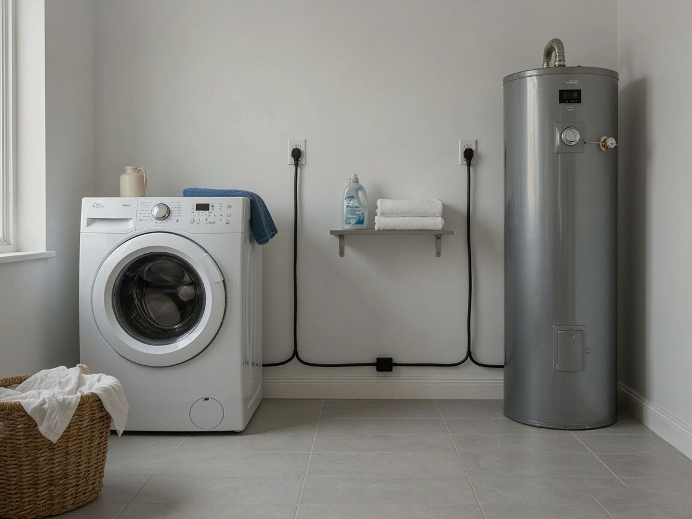
Mandatory dedicated circuits: oven, washing machine, A/C and more
Some appliances must have their own line from the distribution board. Which ones, with what cross-section and which circuit breaker, and what to plan for an air-conditioned villa in Marrakech.
Read the article →
Oven and hob: which cable and which circuit breaker to choose?
The kitchen concentrates the most powerful appliances in the house. Here are the usual cable cross-sections and circuit breaker ratings for the oven and hob, and frequent mistakes on site.
Read the article →
Circuit breaker or residual current switch: what is the difference?
Three devices with similar names, three different roles in the distribution board. Understanding the difference helps you read a quote and know why a device "trips".
Read the article →
30 mA RCD type AC, A or F: which one for which circuit?
Not all 30 mA residual current switches detect the same leaks. The right type depends on the appliances connected, and the question matters in a Moroccan villa heavily equipped with air conditioning.
Read the article →
How many residual current switches for your home's floor area?
The number of residual current switches depends on the floor area of the dwelling and the number of circuits. Here is the reference table and how to distribute the circuits in a villa.
Read the article →
Cable cross-section and circuit breaker rating: the reference table
The circuit breaker rating is chosen according to the cross-section of the cable it protects. Here is the usual table for domestic installations, and the cases where you need to go beyond a table.
Read the article →
Earthing a house: earth rod, foundation loop, resistance
The earth electrode carries away fault currents and allows residual current devices to do their job. The best solution is decided when the foundations are laid.
Read the article →
Main equipotential bonding (LEP): role and installation
Main equipotential bonding brings all the metal parts entering the building to the same potential. A discreet wire, but essential for safety.
Read the article →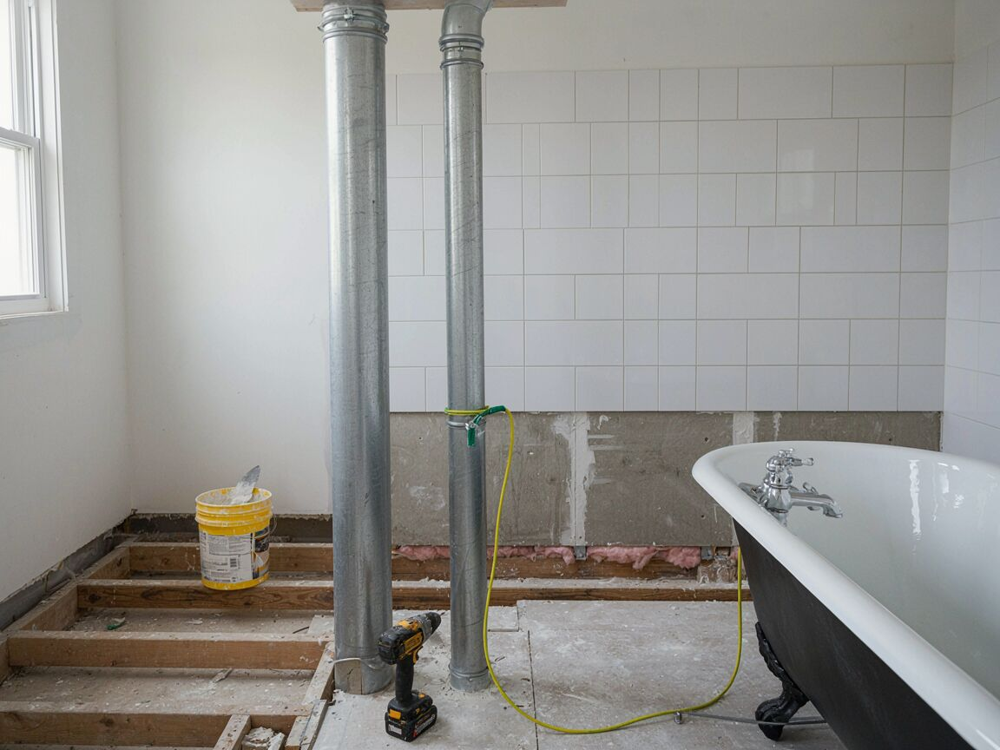
Supplementary equipotential bonding (LES) in the bathroom
In the bathroom, water and wet skin make an electric shock far more dangerous. Supplementary equipotential bonding brings everything metal in the room to the same potential.
Read the article →
Bathroom zones 0, 1, 2: what electrical equipment is allowed?
NF C 15-100 divides the bathroom into zones around the bathtub and shower. The closer you get to water, the stricter the rules.
Read the article →
Distribution board and GTL: location, number of rows, spare capacity
The distribution board and the dwelling technical duct (GTL) bring together the power supply and the protective devices. Their location and size are decided on the drawings, not on site.
Read the article →
Minimum number of sockets and light points per room (NF C 15-100)
The standard sets a minimum number of sockets and light points per room. These are floors, not targets: in a villa, you almost always plan for more.
Read the article →
Kitchen electrics: sockets, circuits and heights by the standard
The kitchen is the room with the heaviest electrical load in a house. Here is the number of sockets, the circuits to plan and the locations to avoid, based on the NF C 15-100 benchmarks.
Read the article →
Surge protector: when is it useful or mandatory for a house?
A storm several kilometres away can be enough to fry a router, an alarm panel or an air conditioner's circuit board. A surge protector limits these overvoltages; here is when it is required and when it is simply sensible.
Read the article →
Single-phase or three-phase for a villa in Morocco: how to choose
The choice between single-phase and three-phase is made when applying for a connection to the distributor. It depends on the villa's total power and on a few large pieces of equipment.
Read the article →Villa power assessment: what meter capacity to request
Adding up the power of every appliance gives a figure that is too high: they never all run at the same time. The power assessment is used to request the right connection, neither too small nor oversized.
Read the article →
Voltage drop and cable length: calculation and rules to follow
The longer and thinner a cable, the more the voltage falls at the far end. In a villa with a garden, pool house or distant gate, it is often the length, not the circuit breaker rating, that determines the cable size.
Read the article →
Swimming pool electrics: zones, 12 V SELV and filtration panel
A swimming pool combines water, the human body and electricity: the most dangerous combination. The rules are based on zones around the pool, as in a bathroom, but with greater distances.
Read the article →
Home EV charger in Morocco: power, cable and price
Charging an electric car from an ordinary socket is slow and puts strain on a circuit that is not designed for it. A wall-mounted charger (wallbox) on a dedicated circuit is the normal solution at home.
Read the article →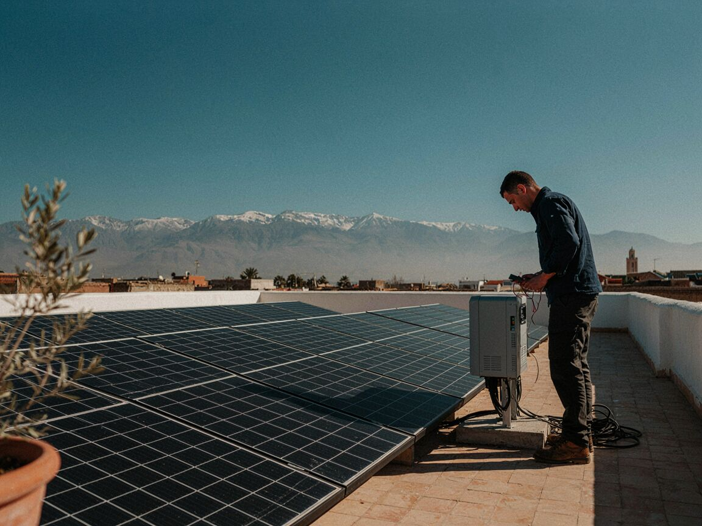
Solar panels for self-consumption: what Law 82-21 changes
Since the implementing decree of Law 82-21 came into force, private individuals can connect their solar panels to the grid within a defined framework. Here are the rules, the procedures and how to size a cost-effective installation.
Read the article →
Electrical wire colours: live, neutral and earth by the standard
Conductor colours are not decorative: they let any electrician instantly identify the neutral, the earth and the live conductors. Here is the code to follow and its limits.
Read the article →
Circuit breaker or RCD keeps tripping: causes and diagnosis
A tripping circuit breaker is not a fault: it is a protective device doing its job. But you still need to know which one tripped, and why, before resetting it.
Read the article →
Villa electrical installation price in Morocco: 2026 benchmarks
Electrical quotes for the same villa can vary threefold. The gap almost always comes from the scope: number of points, quality of materials, low-voltage systems, outdoor areas. Here is how to read the prices.
Read the article →
Villa low-voltage systems: RJ45, communication enclosure, fibre
Wi-Fi does not replace cable. In a reinforced concrete villa, with several floors and thick walls, a well-designed RJ45 network planned from the structural works stage avoids years of unstable connections.
Read the article →
Generator for a villa: power, changeover switch and price
For an isolated villa, a site at the end of the line or a guesthouse that cannot afford a power cut, a generator is an insurance policy. Badly connected, it becomes dangerous for you and for grid workers.
Read the article →
Villa electrical installation: NF C 15-100 and its key rules
Why the NF C 15-100 standard is the reference for electrical studies in Morocco, what changed with the 2024 edition, and the points to check on your project.
Read the article →Plumbing and sanitation
Whole topic →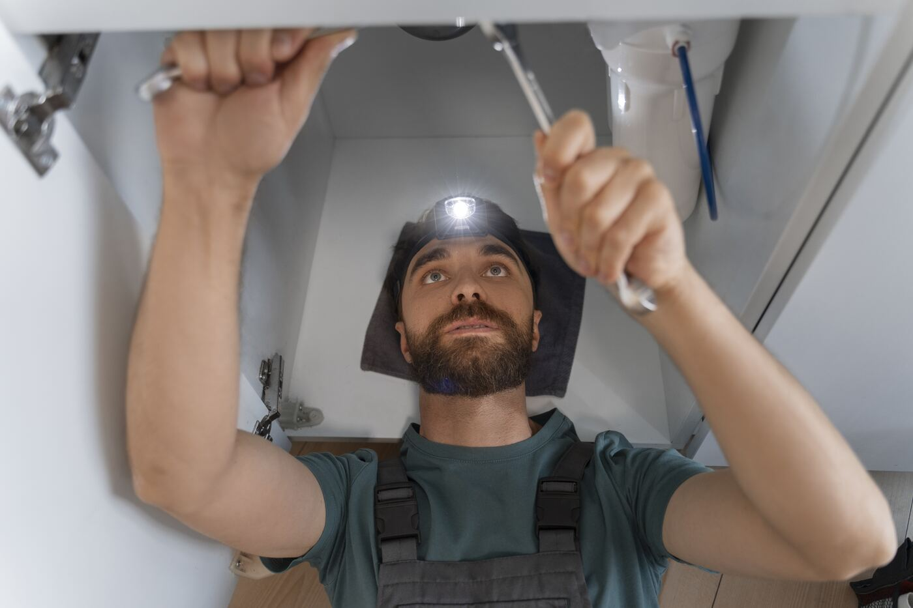
Plumbing pipe diameter: water supply and drainage sizes
A pipe that is too small gives you a trickle in the shower or a washbasin that drains poorly. Here are the usual diameters, fixture by fixture, and what determines them.
Read the article →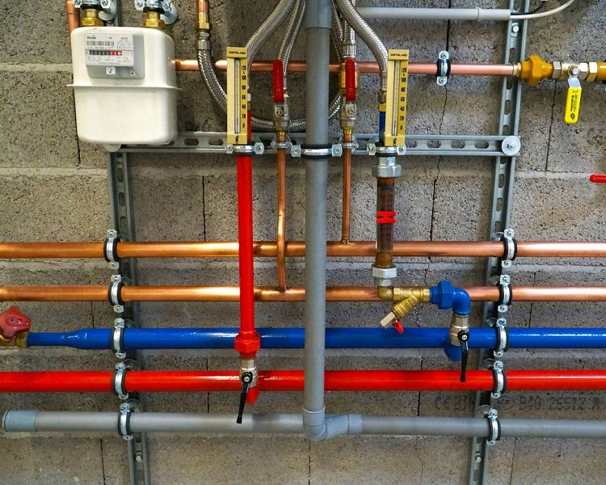
PEX, multilayer, copper or PPR: which plumbing pipe to choose?
Four families of pipe share Moroccan building sites. None of them is bad, but each has its own installation rules and pitfalls.
Read the article →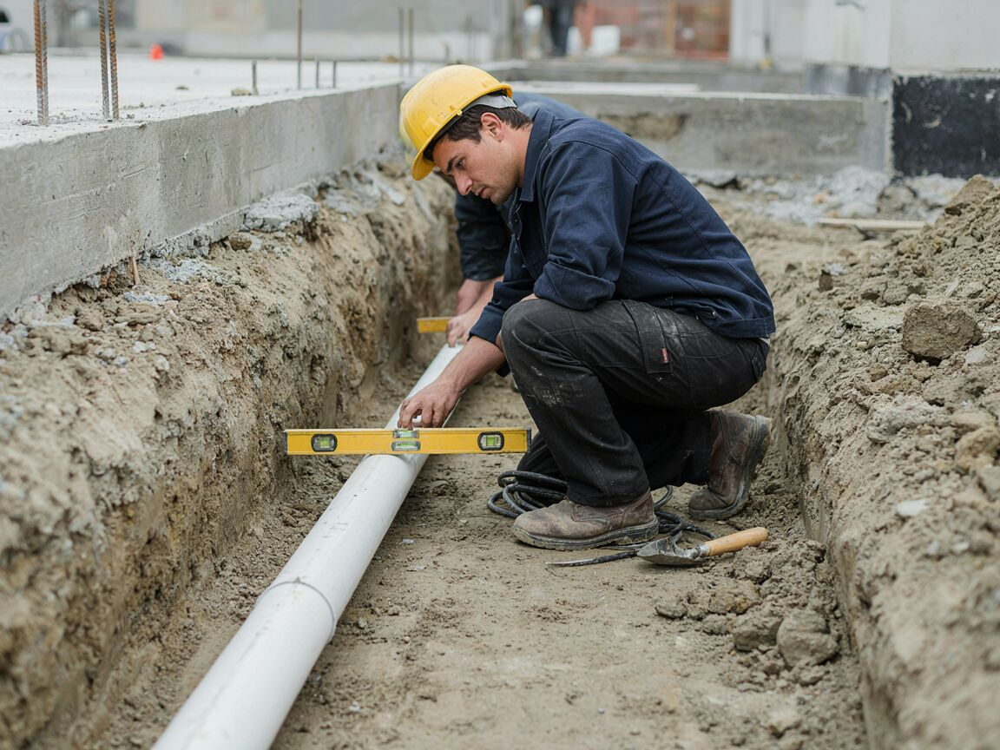
Wastewater drain slope: a minimum of 1 cm per metre of pipe run
A drain that clogs every six months almost always comes down to a badly set slope. The rules are simple, but they still need to be checked before the slab is poured.
Read the article →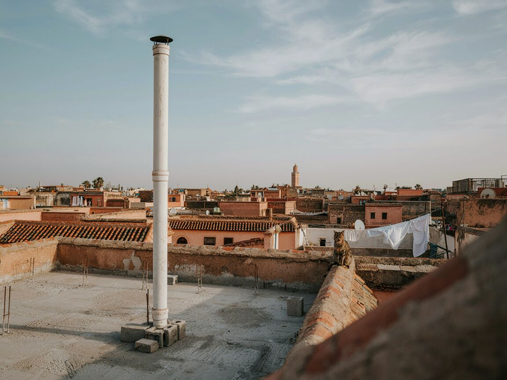
Soil stack primary ventilation: why sewer smells come back up
Bad smells in the bathroom with no visible leak? The culprit is often a drain stack that cannot breathe.
Read the article →
Solar water heater in Morocco: what capacity should you choose?
With Morocco's sunshine, a solar water heater is almost always a good investment. It still needs to be sized and installed correctly.
Read the article →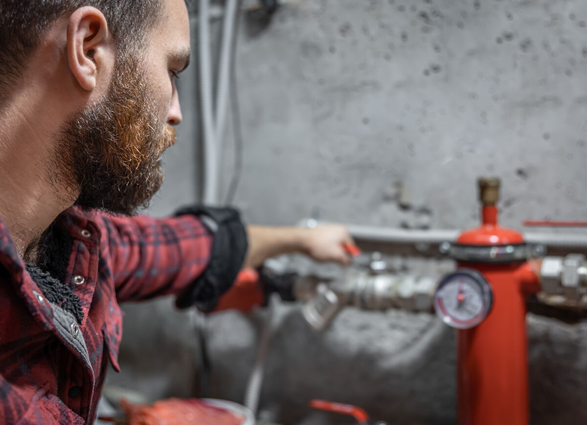
Booster pump and low water pressure: causes and solutions
A shower with no flow upstairs, a water heater that barely runs: before buying a pump, you need to understand where the lack of pressure comes from.
Read the article →
Water hammer in pipes: causes and solutions that actually work
A "bang" in the walls when the washing machine stops or a mixer tap is closed: it is not just a noise, it is a pressure surge that strains the whole installation.
Read the article →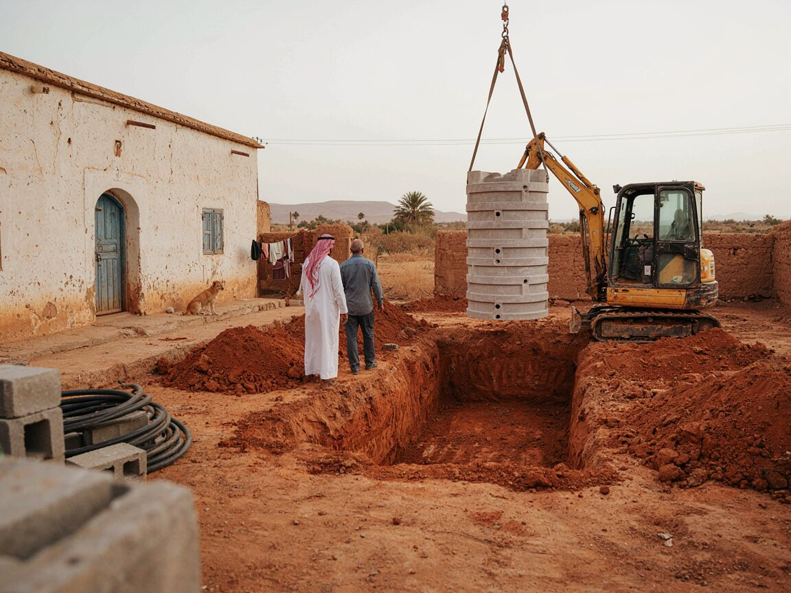
Septic tank in Morocco: sizing, installation and maintenance
Outside areas connected to the sewer, a villa or a farm must treat its own wastewater. A properly sized and maintained tank prevents smells, overflows and pollution of the well.
Read the article →
Detecting a hidden water leak: simple and professional methods
An invisible leak can push up the bill and damage a slab for months. A few simple tests can confirm it, and non-destructive methods can then locate it.
Read the article →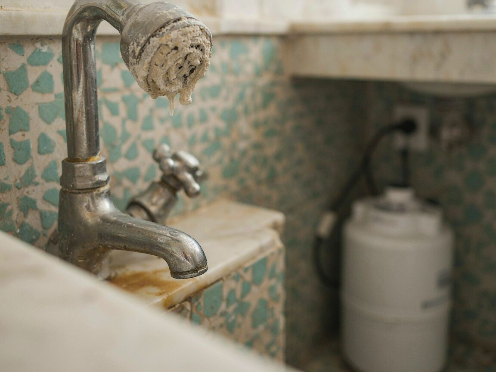
Limescale and water softeners in Marrakech: should you treat water?
White marks on taps, a water heater that heats less well, clogged shower heads: limescale is expensive. Before buying a water softener, measure the hardness of your water.
Read the article →
Rainwater harvesting in Morocco: is it worth it for your house?
In Marrakech, rainfall is low and irregular. Harvesting rainwater is still useful for irrigation, provided the tank is sized realistically.
Read the article →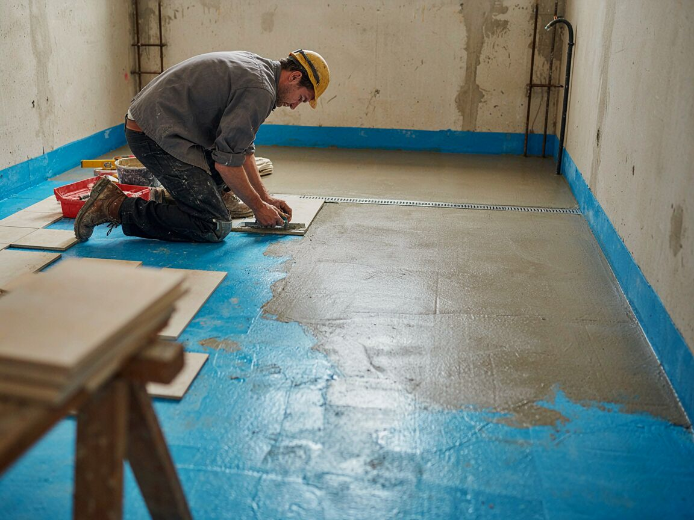
Walk-in shower: slope, drain and waterproofing rules to follow
The level-access shower has become the norm in villas and riads. It is also one of the leading causes of water damage when it is poorly designed.
Read the article →
Home water tank and cistern: how to size and install it properly
Water cuts, low pressure in summer, a villa on the outskirts: many houses in Morocco have a water reserve. Properly sized and installed, it is useful; badly installed, it overloads the slab and degrades the water.
Read the article →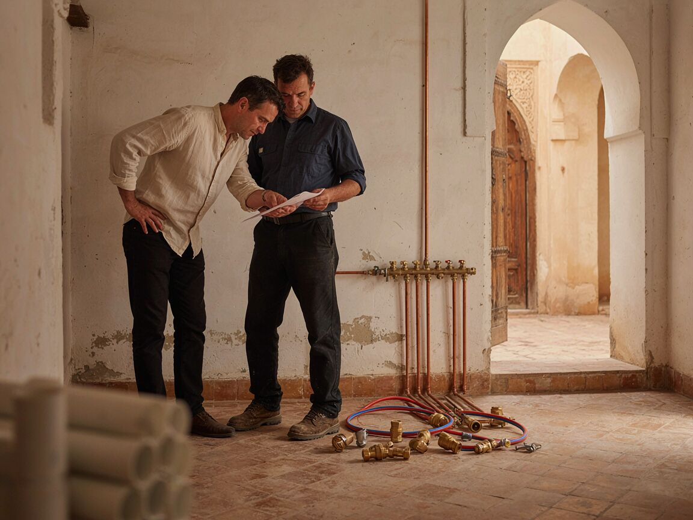
Villa plumbing cost in Morocco: budget items and what to expect
The plumbing and sanitary package weighs less than the structural work, but it concentrates a lot of poor workmanship. Here is how its price breaks down and how to compare quotes.
Read the article →Air conditioning and ventilation
Whole topic →
Air conditioning: what capacity (BTU) for your room size?
The table of capacities by floor area, the factors that change everything in the Marrakech climate, and when a proper calculation becomes essential.
Read the article →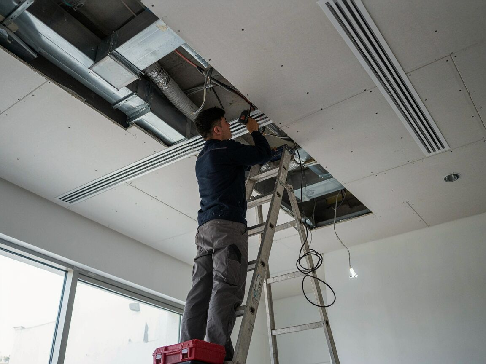
Split, ducted or VRV: which air conditioning to choose in Morocco?
Three main families of air conditioning share the market for villas and buildings in Morocco. The right choice depends on the number of rooms, the space available and the budget, not just on the price of the unit.
Read the article →
Single-flow or heat recovery ventilation: which to choose in Morocco?
Mechanical ventilation renews the air and removes moisture and odours. Dual-flow ventilation also recovers energy from the extracted air, but it is not justified everywhere.
Read the article →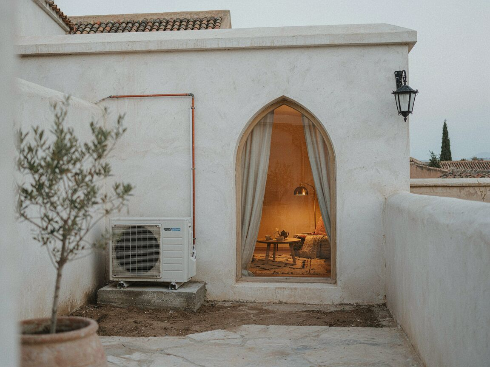
Heating a house in Marrakech: heat pump, reversible AC or underfloor?
It is easily forgotten in summer, but houses in Marrakech are cold in winter. The right heating system depends on insulation, floor area and what is already planned for air conditioning.
Read the article →
Heating and cooling underfloor systems: how they work and limits
Underfloor heating offers the most comfortable heating there is. In cooling mode, it helps in summer, but does not replace air conditioning in the Marrakech climate.
Read the article →
Air conditioning maintenance: how often and what to check?
A poorly maintained air conditioner uses more power, cools less and can spread odours or mould. A few simple steps and an annual visit are enough in most homes.
Read the article →
AC outdoor unit noise: where to install it without disturbing?
Noise from outdoor units is one of the leading causes of neighbour disputes related to air conditioning. A good location, chosen from the drawings stage, solves most of the problem.
Read the article →
Air conditioning a riad with a patio: solutions and mistakes
A riad is not a villa: a patio open to the sky, thick walls, decoration to preserve and very close neighbours. Its air conditioning is designed room by room, respecting the existing building.
Read the article →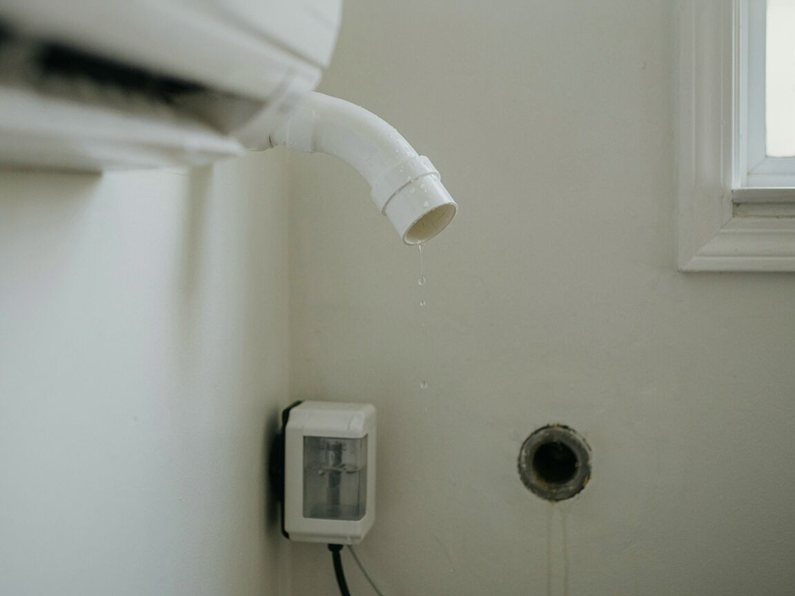
Air conditioning condensate drainage: slope, trap and pump
An air conditioner produces water as it cools the air. If poorly drained, it stains walls, damages ceilings, gives off odours or runs into the neighbour's home.
Read the article →Cost of air conditioning a villa in Morocco: price ranges
The price of air conditioning a villa can vary fivefold depending on the system, the number of rooms and the quality of installation. Here are the orders of magnitude for the equipment and what a quote should include.
Read the article →
Damp, condensation and mould in the home: causes and solutions
Black stains in the corners, misted windows, a musty smell: before repainting, you need to know where the water comes from. Condensation is only one of the possible causes.
Read the article →
Ventilation and smoke extraction in building car parks: principles
A covered car park must be ventilated daily to remove exhaust fumes, and have smoke extraction in the event of fire to allow evacuation and firefighters' intervention.
Read the article →Commercial kitchen hood and extraction: the rules to follow
A commercial kitchen produces heat, steam, fumes and grease. Well-designed extraction protects the staff, the neighbours and the building against fire.
Read the article →Thermal and energy
Whole topic →
Thermal insulation of a house in Morocco: what the RTCM requires
Morocco's thermal building code explained simply: climate zones, which walls and roofs to insulate first, and what it changes for comfort and your air conditioning bill.
Read the article →
Thermal bridges: where they occur and how to treat them
Insulating the walls without treating the columns and slab edges means leaving concrete radiators in the building envelope. Where thermal bridges are and how to limit them.
Read the article →
Double glazing against the heat in Morocco: what really matters
Against the heat, ordinary double glazing is not enough: it is above all the solar factor and external shading that make the difference.
Read the article →Orienting your house in a hot climate: the rules for Marrakech
Before any insulation or air conditioning, the way the house sits on its plot determines much of its summer comfort.
Read the article →
Which insulation for a flat roof terrace in Morocco? A comparison
The roof terrace is the part of the envelope that receives the most sun. Choosing the right insulation, and placing it correctly relative to the waterproofing, transforms comfort on the top floor.
Read the article →
Insulating brick, double wall or monomur: which wall in Morocco?
Hollow brick on its own insulates little. Here is how to choose a wall build-up that really protects against the heat, without compromising the seismic-resistant structure.
Read the article →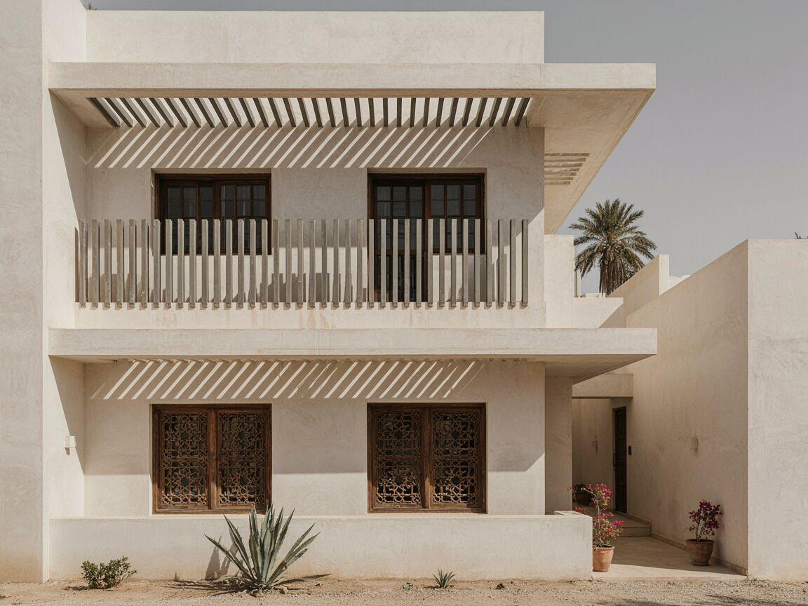
Solar shading: louvres, canopies, shutters and mashrabiya
Stopping the sun before it reaches the glass is the most effective measure against overheating. The right device depends on the orientation of the façade.
Read the article →
Reducing a villa's electricity bill in Morocco: the main levers
In a villa in Marrakech, air conditioning, hot water and the swimming pool account for most of the bill. Here are the levers, ranked by effectiveness.
Read the article →
Energy audit of a building in Morocco: content and obligation
An energy audit shows where a building's energy goes and which actions pay off the most. For some companies, it is mandatory in Morocco.
Read the article →Fire safety
Whole topic →
Fire safety for ERP in Morocco: what Decree 2-14-499 requires
Restaurant, clinic, school, hotel, shop: how the Moroccan fire safety regulation applies to your project and when you need to deal with it.
Read the article →
Fire detection for a hotel, riad or guesthouse: the guide
People asleep, often in an old building with narrow staircases: tourist accommodation is where early detection saves the most lives.
Read the article →
Fire extinguishers: how many to install, which type, what maintenance
The right number, the right type in the right place and an inspection every year: the simple rules for equipping a house, a shop or a hotel.
Read the article →
Natural or mechanical smoke control: principle, choice and upkeep
In a fire, smoke is the biggest killer. Smoke control keeps staircases and corridors usable for the time it takes to evacuate.
Read the article →
Emergency exits and escape routes: number, width, exit units
How many exits, how wide, and where to place them: the calculation logic for the escape routes of a restaurant, a shop or a hotel.
Read the article →
Fire hose reel, dry riser, sprinkler: differences and use cases
Three water-based systems that are often confused: one for staff, another for firefighters, the third that acts on its own.
Read the article →
Emergency lighting and BAES units: layout and maintenance rules
When the power goes out in the middle of a fire, emergency units are the only thing guiding occupants to the exit. Here is how to position them.
Read the article →
Fire safety system (SSI) category A to E: understanding the system
The SSI is the brain of a building's fire safety. Its category, from A to E, sets what it detects, what it triggers and how it raises the alarm.
Read the article →Roads and utilities (VRD)
Whole topic →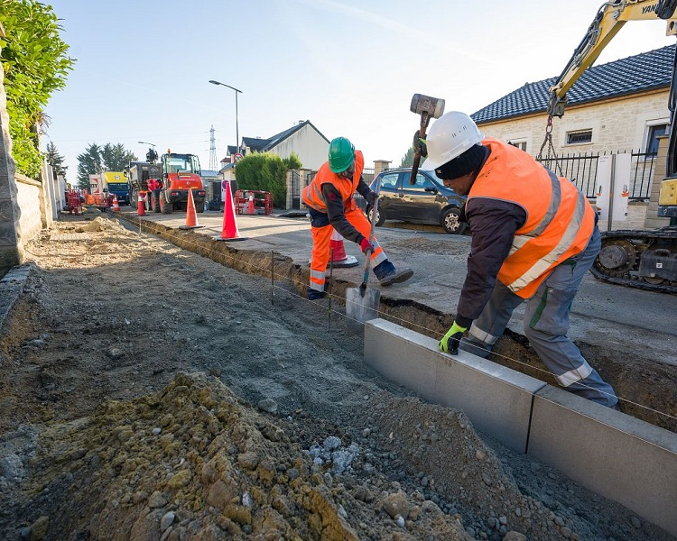
Subdivision VRD in Morocco: the steps from design to acceptance
Roads, sewerage, water, electricity, lighting, telecoms: the logical order of studies and works for a subdivision, and what determines when plots can be sold.
Read the article →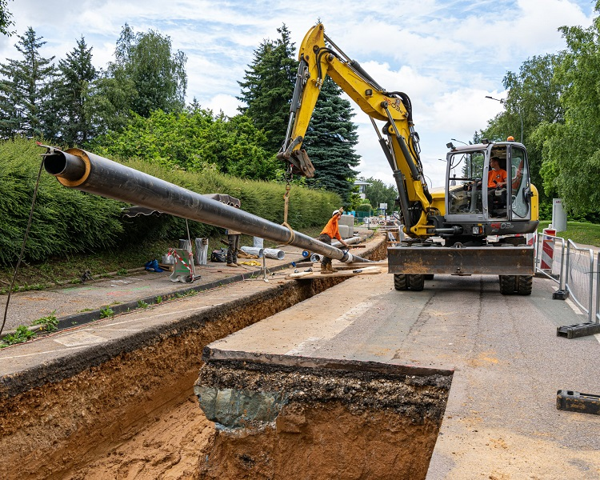
Combined or separate sewer system: differences and choice in Morocco
One pipe for everything or two separate networks: what the choice between a combined and a separate sewer system changes, for a subdivision as for a villa.
Read the article →
Water and electricity connection in Marrakech: from Radeema to SRM
Who to contact, which documents to prepare and which mistakes to avoid to obtain drinking water, sewer and electricity connections for a villa or a building.
Read the article →
Wastewater lifting station: when to install one and how
When the public sewer is higher than your drains, gravity is no longer enough: here is how a lifting station works and how to design it properly.
Read the article →Road pavement structure: layers, thicknesses and mistakes to avoid
A road that deforms after two winters almost always has a defect beneath the asphalt. Here is how a pavement is built and what needs to be checked.
Read the article →
Street lighting for a subdivision: levels, poles, LED and network
How many lux in a residential street, which lamp posts, how to supply the network: the benchmarks for designing the street lighting of a subdivision.
Read the article →
Site drainage and stormwater: solutions for your house
In Marrakech, it rains little but hard: a few storms are enough to flood a basement or a swimming pool. Here is how to manage rainwater on a plot.
Read the article →Trenches and underground networks: depths, warning mesh, distances
At what depth to lay water, electricity, telecoms and sewerage, how to mark them and how to prevent a trench from becoming dangerous.
Read the article →Procedures, prices and site work
Whole topic →Building permit in Morocco: steps, Rokhas file and timelines
From the planning information note to the site notice board: the steps of the building permit, the documents in the Rokhas file and what costs you weeks.
Read the article →Engineering firm fees in Morocco: prices, quotes and what's included
Percentage of works or fixed fee, what makes the price vary, what a serious quote must contain: everything you need to budget the technical studies for your project.
Read the article →
Construction cost per m² in Morocco in 2026: shell and finishes
Structural shell, finishes, turnkey: the prices per m² seen in Morocco in 2026, a worked example and the expenses not to forget in your budget.
Read the article →
Occupancy permit and certificate of conformity in Morocco: procedure
Without an occupancy permit, a new house cannot be legally occupied, permanently connected to utilities or sold with peace of mind. Here is how to obtain it without unpleasant surprises.
Read the article →
Technical inspection body in Morocco: role and when it is mandatory
The technical inspection body does not design the building: on behalf of the client and the insurer, it checks that the design and construction present no technical risk.
Read the article →
Decennial guarantee in Morocco: DOC Article 769 and RCD insurance
In Morocco, decennial liability has existed since the Dahir of Obligations and Contracts, but its scope is narrower than in France. What it covers, who it targets and how to protect yourself.
Read the article →Acceptance of works and snag list: the step-by-step procedure
Acceptance is the act by which you accept the building. Whatever you do not report on that day becomes much harder to have put right afterwards.
Read the article →Contract with your construction company: the essential clauses
Most site disputes stem from a contract that is too short. Here are the clauses to insist on before entrusting the construction of your house to a contractor.
Read the article →
As-built drawings and DOE: the file to demand at the end of works
In five years' time, when a leak appears under the tiles or a circuit breaker trips, this file will save you days of searching and a lot of money.
Read the article →Site supervision by the engineering consultancy: which visits to plan
A perfect drawing is useless if the site does not follow it. Supervision by the engineering consultancy means being present at the moments when a mistake becomes invisible.
Read the article →
Renovation works in Morocco: do you need an authorisation?
Redoing a kitchen has nothing in common with opening a load-bearing wall or enclosing a terrace. The level of authorisation depends on what the works change.
Read the article →
Construction specifications (CPS): content and why you need them
Without specifications, each contractor prices a different building and you can neither compare bids nor demand the promised quality.
Read the article →
Is an architect mandatory in Morocco? Laws 12-90 and 016-89
To build in an urban area in Morocco, an architect is not optional. What the law requires, the possible exceptions and how roles are shared with the engineering consultancy.
Read the article →Guest house in Morocco: standards, Law 80-14 and star rating
Turning a riad into a guest house means changing its use: the building becomes a tourist accommodation establishment, with its own rating and safety requirements.
Read the article →
BIM for a construction project: the practical benefits
BIM is not just another 3D software package: it is a way of designing the entire building in a single model, so that problems are solved before the works start.
Read the article →
What does a technical engineering firm do in your project?
Architect, BET, inspection body: who does what, when the engineering firm steps in, and why it often saves more than it costs.
Read the article →
Cost of building a villa in Marrakech in 2026: price per m²
How much a built m² costs by standard, how much the structural shell weighs, and what to add to the building price to get a realistic budget.
Read the article →